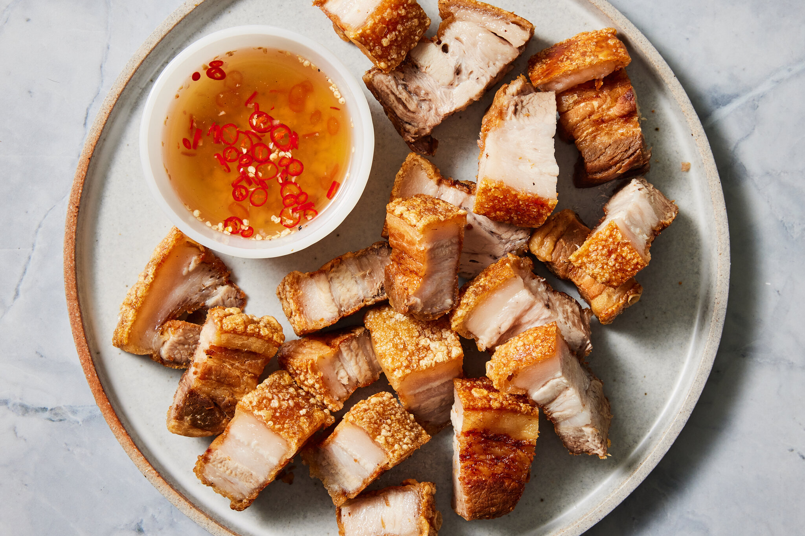

Popular Filipino Dishes
Adobo

Description: A savory dish made with pork or chicken marinated in soy sauce, vinegar, garlic, and spices, then simmered until tender.
Ingredients:
- 1 kg pork or chicken (cut into pieces)
- 1/4 cup soy sauce
- 1/4 cup vinegar
- 4 cloves garlic (minced)
- 1 onion (sliced)
- 1 bay leaf
- 1 tsp peppercorns
- Salt to taste
Preparation Steps:
- Marinate the meat in soy sauce, vinegar, garlic, and peppercorns for at least 30 minutes.
- Simmer the mixture in a pot over medium heat for 45 minutes, or until the meat is tender.
- Add bay leaf and adjust seasoning to taste.
- Serve with steamed rice.
Sinigang na Baboy

Description: A tangy tamarind-based soup with pork, vegetables, and a variety of spices.
Ingredients:
- 1 kg pork belly (cut into pieces)
- 1 onion (quartered)
- 2 tomatoes (quartered)
- 1 pack sinigang mix (or fresh tamarind)
- 2 long green chili peppers
- 1 eggplant (sliced)
- 1 bunch kangkong (water spinach)
- 2 okra (sliced)
- 1 radish (sliced)
- Salt to taste
Preparation Steps:
- Boil pork with onions and tomatoes until tender.
- Add sinigang mix (or tamarind) and simmer for another 10 minutes.
- Add vegetables and cook for another 5 minutes until tender.
- Season with salt and serve hot.
Pancit Canton
Description: A stir-fried noodle dish made with vegetables, meat, and a savory sauce.
Ingredients:
- 200g pancit canton noodles
- 1/2 lb chicken breast (shredded)
- 1/2 lb pork (sliced thinly)
- 2 carrots (julienned)
- 1 onion (sliced)
- 1/2 cup soy sauce
- 1/4 cup oyster sauce
- 2 cups chicken broth
- 1/2 cup snow peas
- 1/2 cup bell pepper (sliced)
- 2 tbsp oil
Preparation Steps:
- Cook pancit canton noodles according to package instructions.
- Stir-fry pork and chicken in oil until cooked through.
- Add vegetables, soy sauce, oyster sauce, and chicken broth. Simmer for 5 minutes.
- Add noodles and stir-fry until well mixed and heated through.
- Serve hot with a squeeze of calamansi (Philippine lime).
Lechon Kawali
Description: Deep-fried crispy pork belly served with a dipping sauce of vinegar and soy sauce.
Ingredients:
- 1 kg pork belly (cut into chunks)
- 1 onion (quartered)
- 1 head garlic (crushed)
- 2 bay leaves
- Salt and pepper to taste
- Vegetable oil for frying
Preparation Steps:
- Boil pork belly with onions, garlic, bay leaves, salt, and pepper until tender.
- Drain and allow the pork to cool before deep-frying in hot oil until crispy.
- Serve with a dipping sauce of vinegar, soy sauce, and crushed peppercorns.
Halo-Halo

Description: A famous Filipino dessert made with a mixture of crushed ice, fruits, jellies, and leche flan.
Ingredients:
- Shaved ice
- Sweetened beans (red mung beans, garbanzo beans)
- Sweetened banana (saba)
- Leche flan
- Ube halaya (purple yam jam)
- Jelly (nata de coco or coconut gel)
- Evaporated milk
- Sugar (optional)
Preparation Steps:
- Layer the ingredients in a tall glass: start with the sweetened beans, banana, leche flan, ube, and jelly.
- Add a scoop of shaved ice on top.
- Drizzle with evaporated milk and sprinkle sugar to taste.
- Mix well before eating for a refreshing treat!